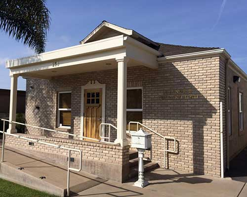

From the moment you walk through our doors, you will feel relaxed and any anxiety you had before coming in will be gone. Our office has a very warm feeling, our staff is the best in the business and are excited to answer any questions you may have. Our office is also decorated in relaxing tropical beach theme, so every visit is like a vacation. Come see what we are talking about.

Comfort and Convenience
Our office is state of the art. All rooms feature the latest and most high end equipment available. Since making sure you are comfortable is very important to us, all rooms feature televisions on the chair and in the ceilings, accompanied with satellite cable and wireless headphones. We do this to get your mind off the procedure at hand, this in turn quickens the process and before you know it, your ready to go home.